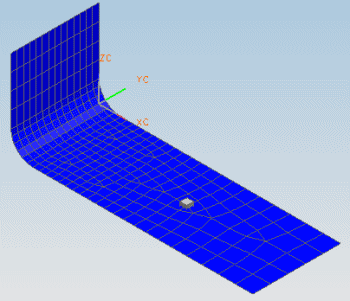

This tutorial continues with the files you created in the Response Simulation – FE model setup activity.
In this tutorial, you will perform a transmissibility analysis, transient analysis, and random analysis.
Before starting this tutorial, make sure the Simulation and FEM files you created in Response Simulation – FE model setup are open in NX.
Launch the Response Simulation – Analysis Events activity.